It is a popular opinion that freelancing websites like Upwork and Elance only offer cheap overseas labour. Sure, you can hire anyone in developing countries to do a job for you for $2 and get back questionable work quality. However, the pool of talent willing to freelance is growing. 17 million Americans are now freelancing or self-employed. This number is expected to rise to 24 million people in the next five years. More and more people are choosing to freelance so they can have more control over their work schedule, more time to spend with family and greater job satisfaction.
The bigger challenge is distinguishing outstanding applicants from just “productive” applicants. I will share four hacks that will help you attract quality applicants and sift through potential candidates quicker.
Tools Used:
- Upwork.com (formerly oDesk.com), Elance.com, Freelancer.com, PeoplePerHour.com or similar skill-exchange marketplaces
- ParseHub.com – to fill out and send messages through freelance marketplaces
- Streak.com Snippits – to send follow-up emails through Gmail
- GetWeTime.com – to quickly schedule interviews with top freelancers
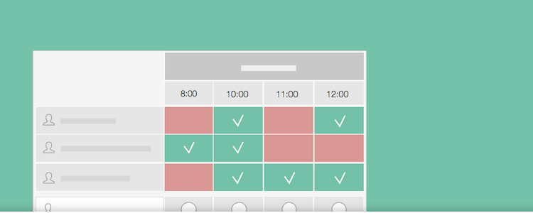
1. Create an appealing job post
When posting on places like oDesk.com and Freelancer.com, the quality of your job description is everything. Don't expect to get your ideal applicant if your post contains two sentences. Also, if you give too much information away freelancers may just skim and apply with a generic cover letter.
What makes a good job posting?
- Be descriptive without giving away too many details
- Use bullet points or lists to break down tasks and instructions
- Provide examples of the type of work that you are looking for
- Ask for samples or offer a paid trial to potential candidates
- Be clear on what the freelancer should do to apply for the job
- Make freelancers feel like they are part of the team
- If possible, offer on-going work or say you are looking for a long-term partnership
Example: job posting
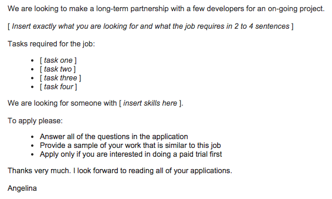
2. Automatically invite freelancers with ParseHub
In my experience, for every 100 applicants I was able to shortlist 20 average applicants. Out of those 20 applicants, only 4 completed the paid trial successfully and 3 were hired. Even out of the last 3 freelancers, 2 had conflicts in their schedule to complete the project successfully.
The point is – you need a lot of people to see and apply for your job, so you can have the best pool of applicants to choose from. I used ParseHub, a visual web scraping solution that my team and I created, to automatically invite relevant freelancers to my job posting. Of course, some freelancers declined the invitation, but others that might have otherwise missed the job eagerly applied.
After downloading the ParseHub browser extension, follow the three steps below to automate sending an invite to each freelancer.
Step I: Log into Upwork
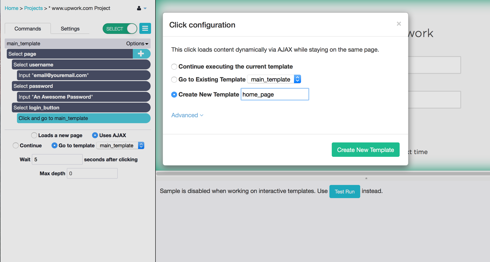
Please note that as of January 2019, the upwork website generates reCaptcha which makes it impossible for ParseHub to take the steps below.
- Go to upwork.com/login
- Click on ParseHub's "New Project" button and click "Start project on this URL". Now you will give ParseHub the instructions that you want it to do starting on this page.
- ParseHub has already added a Select command, so you can select the "Username or Email" text box just by clicking on it.
- Enter your username into the Input command.
- Click on the "plus button" beside the command "Select page", and add a new Select command
- Use the Select tool to click on the password text-box and use the input tool to enter your password
- Use another Select command to select the "log-in" button, name it login_button
- Click on the plus button beside the command "Select and extract login_button" to add a new command.
- Choose the Click command from the command menu.
- You will be traveling to a different page, so choose "Create a new Template" and name it home_page. Clicking on the "Create New Template" button will log you in and take you to your Upwork home page.
Step II: Search for relevant freelancers
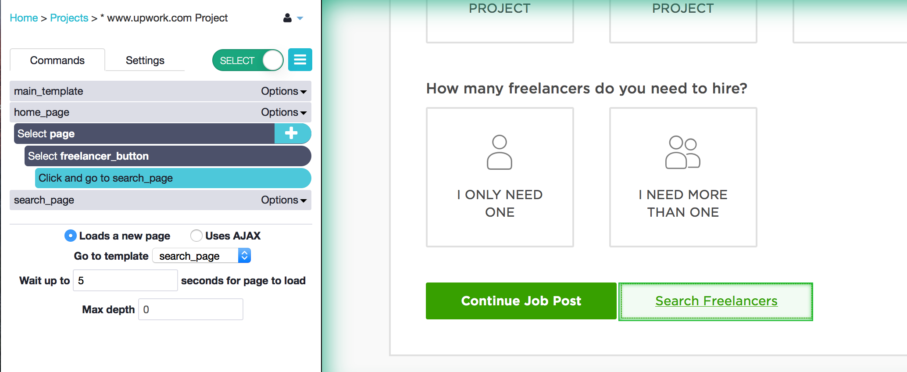
- Now on your Upwork home page, you want to search for a list of freelancers. With the Select command that will be automatically added when you travel to this page, click on the button "Search Freelancers" located beside the "Continue Job Post" button. Call it freelancer_button.
- Click on the plus button next to the command "Select and Extract freelancer_button" to add the Click command.
Create a new template called "search_page" and click the "Create New Template button to travel to the search page.
On this new page, you can have ParseHub customize your search in any way you want. I will have it search for someone to colorize a photo.
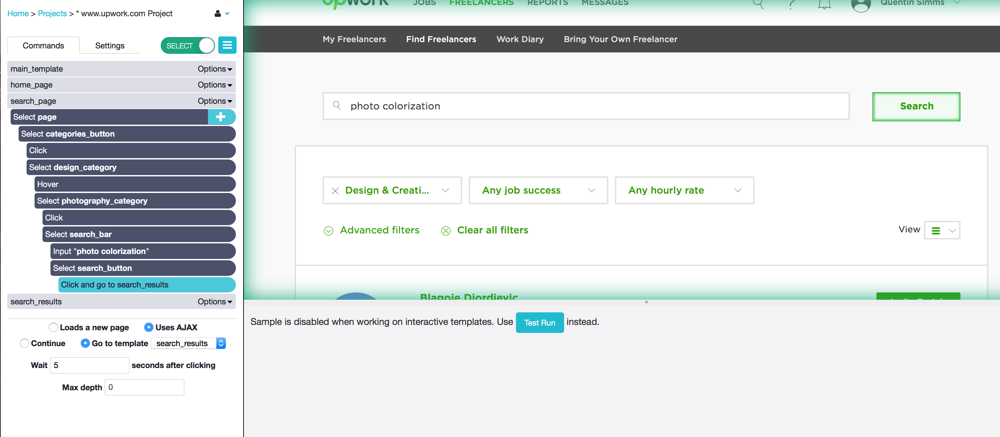
- First I will choose the category. With the Select command that was automatically added when I travelled to this new page, I will click on the little down pointing arrow that is in the "Any Category" tab. This is the button that opens the categories menu. Call it categories_button.
- To get ParseHub to open the menu, add a Click command by pressing the plus button next to the "Select and Extract categories_button and choosing Click from the commands menu.
- Tell ParseHub to "Continue executing the current template" since you are staying on the same page.
- Add a Select command by holding the shift key and and clicking the plus button next to the "Select categoriesbutton" command, and click on the Design & Creative category to select it. Call it design_category.
- This time, click on the plus button next to "Select design_category, open the advanced menu, and add a Hover command. This will open up the category sub menu.
- Add a Select command by holding shift and clicking on the plus button next to "Select design_category"
- Select the Photography sub-category. Make sure that you select the text node with the word photography in it, or else this will not work. To select the text node and not another part of the webpage, zoom in by holding ctrl (or command for Mac) and pressing 1 until the highlighted selection is the text node. Click on it and call it photography_category.
- Click the plus button beside the "Select photography_category" command and add a Click command. Continue on the same template.
- Hold the shift key, click the plus button next to "Select photography_category" and add another Select command. Select the text input bar at the top of the screen and input "photo colorization".
- Select the search button with another Select command, and add a Click command to travel to your search results. Create the new temple called search_results.
Step III: Fill out and send a message to each freelancer
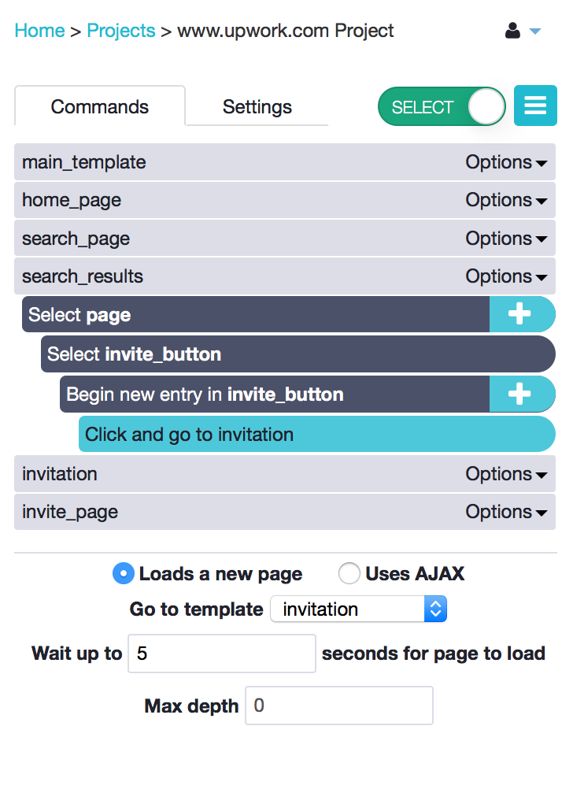
- You will be on a page with 10 freelancers that match the criteria you entered. With the Select tool, click on the first "Invite to Job" button". The rest of the buttons should also be highlighted: click on another to select them all. I called them invite button.
- Selecting all of the buttons will automatically add a Begin New Entry command and two Extract commands. You will not need the two Extract commands, so delete them by clicking on the x buttons on their right.
Click on the plus button beside "Begin new entry in invite_button" and add a Click command. Create a New Template called invitation. You will be taken to the invitation page of the first freelancer on the page.
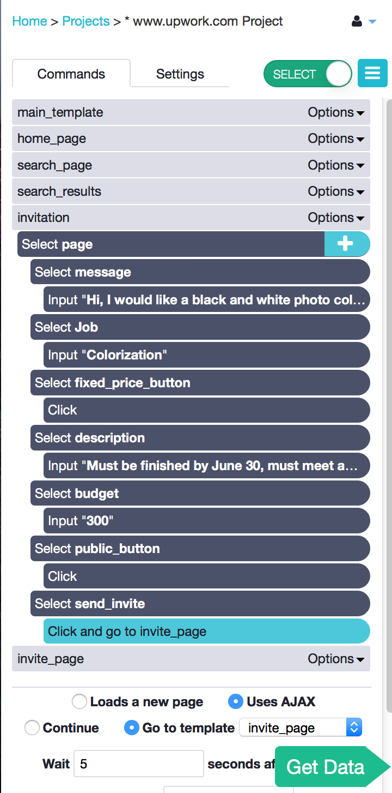
- The content of your messages is up to you. Remember, this will be sent to each one of the freelancers in your search results!
- You can see how to go through multiple pages of results to send to more than just 10 freelancers here.
3. Offer a paid trial to shortlisted applicants
First skim through all of the applications to determine which freelancers are top notch. We found that most of our applicants are of average or below average quality. Out of 100 applicants we usually shortlist 20.
Step I: Shortlist all promising applicants that...
- Do not have generic, copy and paste material in the cover letter
- Address the responsibilities listed in the job posting
- Mention sample projects and skills that make him/her the ideal candidate
- Answer all cover letter questions
- Respond to your invitation professionally, using proper English
- Are eager to connect and are excited about the job
- Have good reviews and an above 4.8 stars rating
- Charge an hourly rate that you are comfortable paying
Step II: Follow-up with shortlisted applicants and...
- Assign and explain the paid trial project
- Ask if they have any questions about the job that you can address
- Save time by telling applicants to add you on skype
Example: follow-up email template
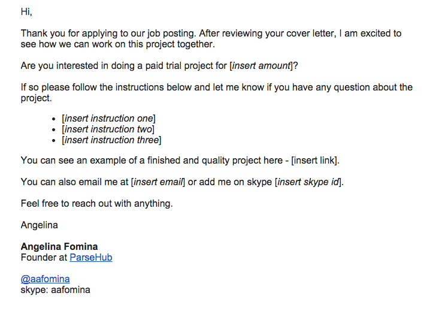
4. Automate your follow-up emails with Steak
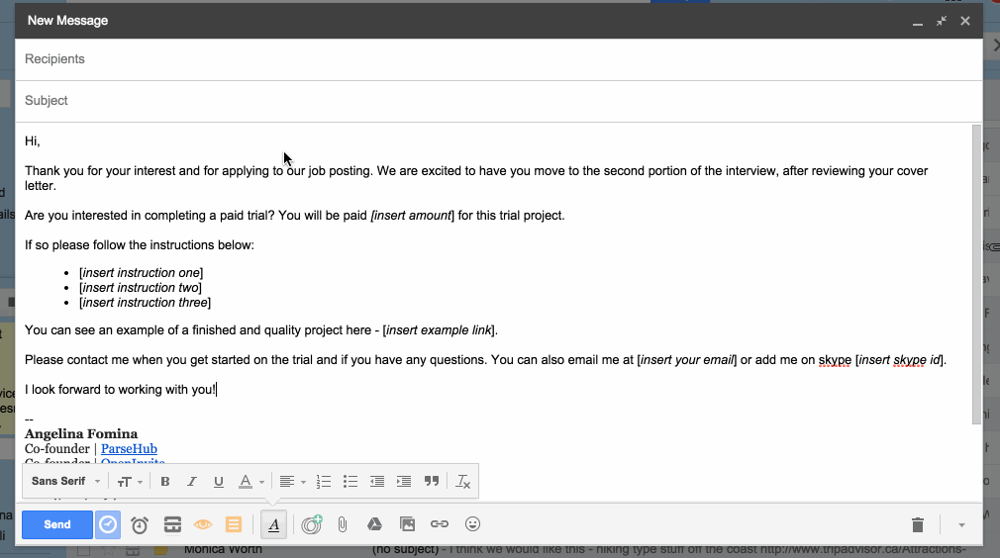
Sending all of the messages by hand can be tedious. We found, even after shortlisting applicants a lot of them were not interested in doing a paid trial, or had a very delayed response to our follow-up message. Out of the 20 shortlisted applicants we only did paid trials with 4 applicants.
To send follow-up emails faster you can...
- Use ParseHub to send a follow-up message to everyone that applied. Use the same steps as in step 2 to send messages to everyone.
- Respond to freelancers through your email account and use a Gmail plug-in to avoid manual copy and paste.
Each freelancer application was sent to my Gmail by oDesk. I used Streak.com Snippets to have more control over how I personalized each message and to avoid the manual copy and paste.
Streak let's you save frequently written emails and send them with one click. This frees up the time you would otherwise be copying and pasting.
5. Schedule 10 minute interviews with WeTime
You might say that a call is not always necessary. However, hiring a freelancer is not just about getting the current job done - it is just as important to build a relationship with each freelancer.
If you help your freelancers out - with tips, advice or even free subscriptions to your software - the reward can come back tenfold. By engaging, you are building loyal "fans" that promote your product by word of mouth and build a community around it.
Step I: Review the trial projects and follow-up to...
- Provide feedback on the trial project
- Ask each freelancer for a 10 minute skype call
Example: email template to schedule interviews
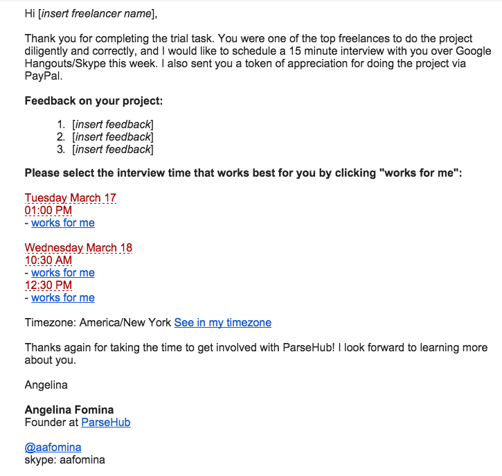
Step II: Use WeTime to add interview time-slots right into your email
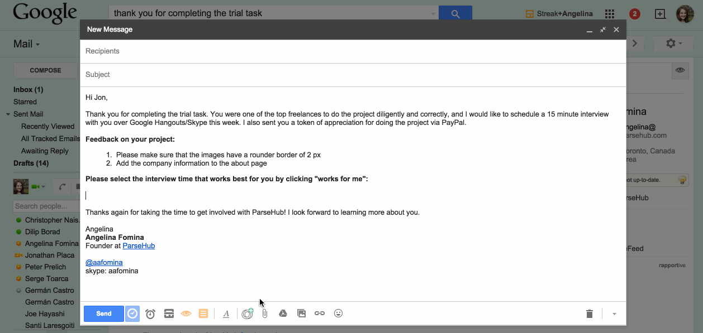
I love simple solutions and was very excited to find WeTime.
- The app is a Gmail plug-in and takes 2 seconds to install the app
- It connects with your Google Calendars
- To add time-slots into your email just click one button and select times from a simple pop-up
- You can set any duration for the meeting - even if it is 5 minutes long.
- You can create and send out a poll for group meetings
Of course, you might prefer a different scheduling workflow. And there are plenty of scheduling apps for you to choose from. Zapier has a great blog reviewing the 16 best meeting scheduler apps, so you can pick the right tool for you.
Concluding Thoughts
Now it’s time to pick your winning freelancer:
- Where they easy to communicate with?
- Where they professional, respectful and eager to work?
- Did they meet the trial project deadlines?
- Did they ask you the right questions or for clarification?
- Did they go back and fix their work based on your feedback?